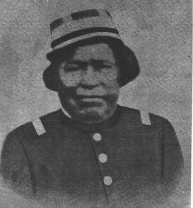
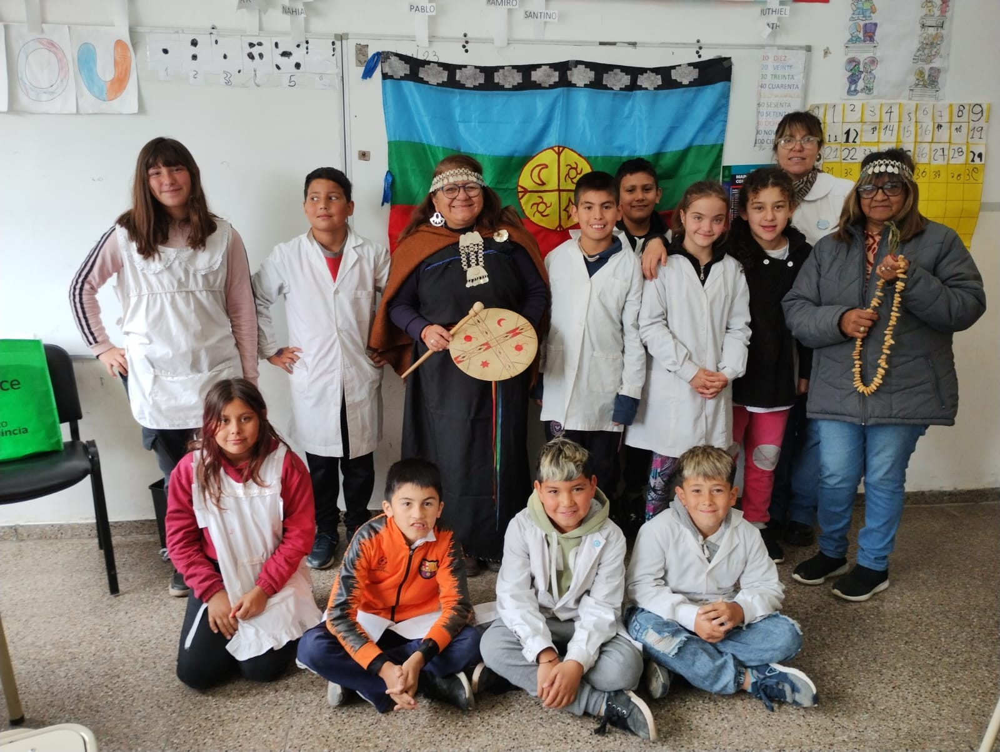
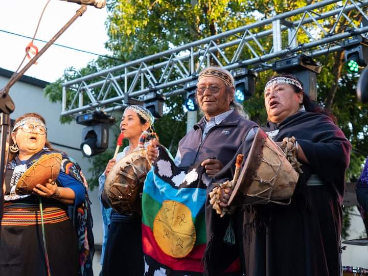

Nuestra Comunidad
Los integrantes que conforman la comunidad son descendientes del cacique Ignacio Coliqueo los cuales de hace años participan de trauw como parlamentos y otros encuentros no solo en General Viamonte, sino tambien en el resto del país.
Algunos de ellos desde muy pequeños fueron incorporando todos los conocimientos del pueblo mapuche, por tal motivo, lo quieren aplicar en la comunidad.
Desde el otorgamiento de las 16800 hectáreas por parte del gobierno nacional en el año 1861 al Cacique Ignacio Coliqueo surgió la creación de la ciudad de Los Toldos, que luego se cambio por General Viamonte.

Ignacio Coliqueo (Boroa, Araucanía, 1786 - Los Toldos, interior de la Provincia de Buenos Aires, 16 de febrero de 1871) lonco mapuche boroano y coronel del Ejército Argentino
Muchos integrantes de la tribu pasaron a vivir en la ciudad y otros quedaron en las tierras cedidas, situación que todavía persiste con las costumbres ancestrales del nuestro pueblo. Nosotros los integrantes de Az Mapu nos hemos conocido en nuestro territorio, hemos compartido diferentes encuentros afianzando nuestra espiritualidad con otras comunidades, creamos espacios de talleres que ver con nuestra cultura como telar, tallado en madera, platería, música, alfarería,etc.

5 de octubre 2023 - Charla sobre los saberes ancestrales
La comunidad tambien ha creado trabajos comunitarios, es por esto y más que decidimos emprender el camino juntos y así fortalecernos.
Aprendimos por nuestros mayores la filosofía de nuestro pueblo y su relación con toda la naturaleza y el universo, ahora es nuestro turno de transmitirles a nuestros hijos, nietos, bisnietos lo aprendido como lo hicieron nuestros Kuifi que che.
Queda mucho por aprender y hacer, ya que nuestra cultura es muy amplia...
y nuestros derechos también.

5 de nov 2023 - Dia de General Viamonte